Question
How tightly does a measured body constrain the rule that generated it?
We began by asking whether we could recover a rule from the body it grows. The experiments showed that the measured body is compatible with many rules. The compiler therefore compares several candidates, runs each one, and checks the resulting form. Behavior and dynamics omitted from the target can still vary.
Each Flow Lenia rule in this analysis has 40 parameters. We ran 5,000 distinct rules and described each stable result with 15 measurements covering body form, mass, energy, and movement. We then asked how much those measurements narrow down the rule that produced them.
Across the corpus, variation in the 40 rule parameters behaved as if it had about 25.5 independent directions. Variation in the 15 outcome measurements behaved as if it had about 5.9 independent directions. The 19.6-direction gap estimates how many ways a rule can change while its measured result stays in roughly the same part of body space. A second calculation estimated a similar gap of 20.9 directions.
We checked the same idea without subtracting dimension estimates. Rules that produced nearby measured bodies were, on average, 98.6% as far apart as randomly paired rules. Similar bodies therefore do little to identify the underlying rule. The compiler responds by generating several candidates, running each one, and selecting according to the body that actually grows.
How tightly does a measured body constrain the rule that generated it?
Rules producing nearby measured bodies had an average separation equal to 98.6% of the distance between randomly paired rules.
The compiler samples conditional proposals, refines them by running the simulation, and validates the selected rule in the forward simulator.
Phenotype space contains the measurements made on each body. For any location in that space, the corresponding fiber contains the rules that produce similar measurements.
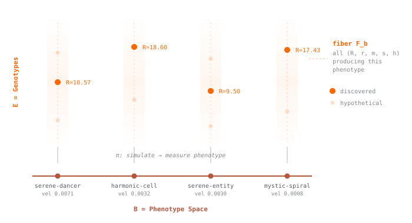
This earlier diagram places phenotype space below the corresponding sets of rules. It explains the relation conceptually. The positions are not measured data.
reused schematic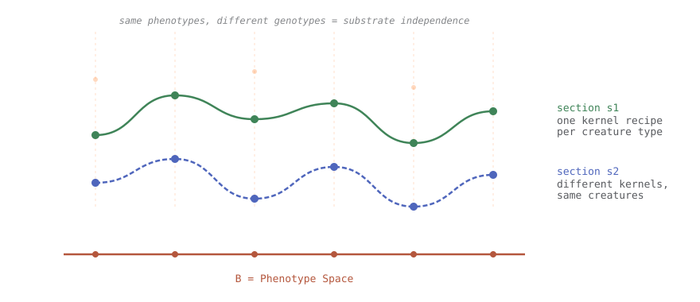
A section selects one rule for each phenotype. Another section can select different rules while reproducing the same measured bodies, which leaves their dynamics free to differ.
reused schematic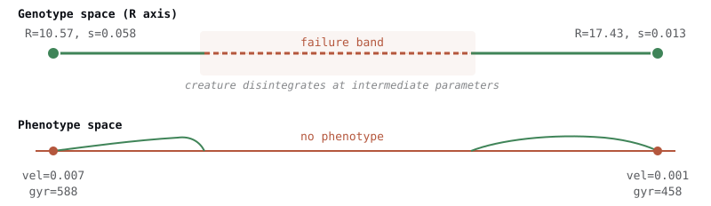
The third diagram shows a gap in the viable-body region. A smooth change in rule parameters can cross that gap, so the compiler may need to find a route around it.
reused schematicFigures 01A–01C are conceptual diagrams. Figures 02–04 are generated from the frozen anatomical-compiler results.
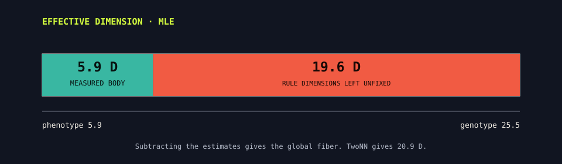
The genotype estimate is 25.5 dimensions. The body descriptors account for 5.9 dimensions, leaving an estimated 19.6 rule dimensions unconstrained.
5,000 forms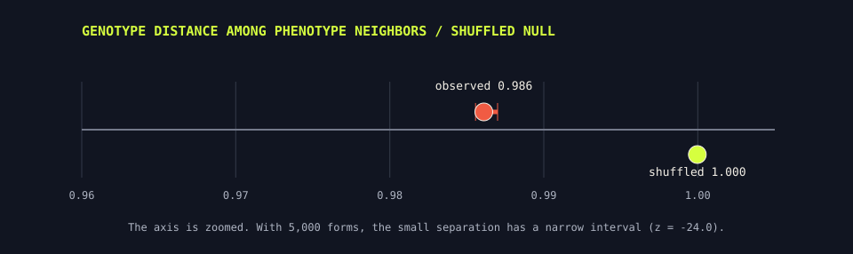
Bodies that are close in phenotype space remain widely separated in genotype space. The zoomed axis shows the observed ratio and its interval beside the shuffled value.
cohort diagnostic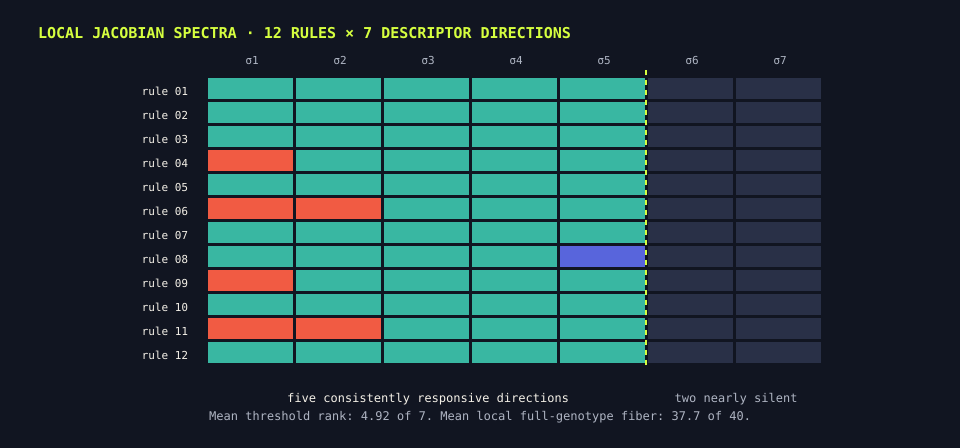
Across 12 rules, about five singular values crossed the response threshold, while sensitivity was concentrated in fewer effective directions. The participation-rank estimate leaves a mean 37.7-dimensional local fiber in the 40-parameter rule.
12 local probesThe conditional model provides starting candidates. Simulation measures how each candidate grows, and the refinement search uses those measurements to find better candidates. A separate Swift implementation then checks the MLX search runtime over the first six steps.
Across 5,000 forms, body similarity provided little information about which rules were nearby.
cohort diagnosticThe conditional invertible network was trained on 4,200 rules and tested on 400. The resimulation check covered 2 targets with 4 samples each.
small validationAcross four targets, simulation-guided search reduced mean standardized cost from 1.149 to 0.576, a 50% decrease.
four targetsFor one rule and one seed, the MLX and Swift paths remained above 0.999956 correlation through six steps.
one rule / seed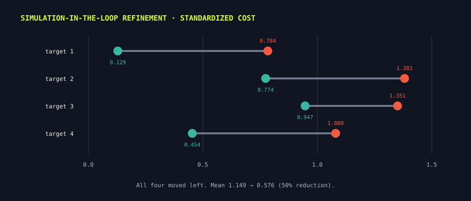
Refinement lowered the recorded cost for all four targets. Their final costs still ranged from 0.129 to 0.947.
four targets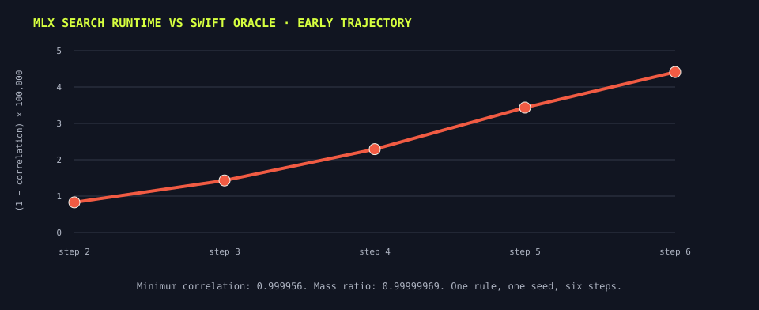
For one genotype and initialization seed, MLX and Swift remained closely aligned through step six. This check covers the beginning of one trajectory.
implementation checkSpecimen 2876 was selected from the 5,000-form corpus because its developed body is compact, tapered, and easy to recognize. The target is the complete 1,200-step trajectory summarized by four measurements. It is not a request to reproduce one frozen frame.
The compiler did not reconstruct the leaf anatomy. It found a different organism whose mass, occupied area, and spread sit near the requested trajectory. This is a concrete example of the inverse fiber: the measured phenotype leaves enough freedom for another body plan.
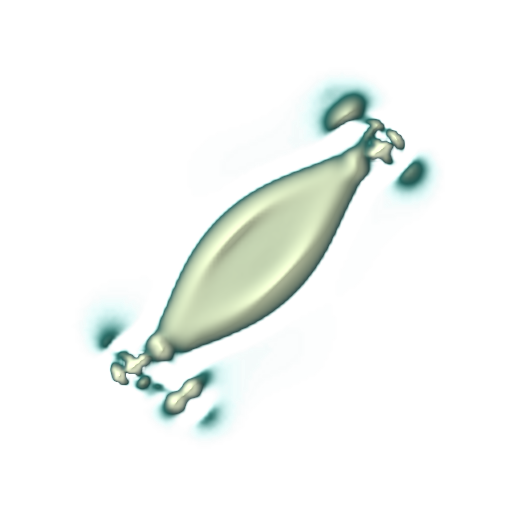
The body changes as it develops. We therefore record a trajectory rather than treating one attractive frame as the whole phenotype.
Mass, mass variation, occupied area, and gyration define the request. Orientation, segmentation, topology, and locomotion are not part of this target.
| measurement | target | recovered |
|---|---|---|
| mass | 799.9 | 791.1 |
| occupancy | 11.7% | 10.5% |
| gyration | 1005.0 | 1152.8 |
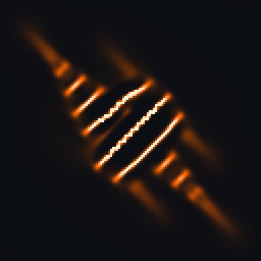
The compiler finds nearby corpus entries under the four measured descriptors, simulates twelve candidates, and starts from the best proposal. The known target values are present in the corpus, so this is a retrieval-and-refinement case rather than a held-out generalization test.
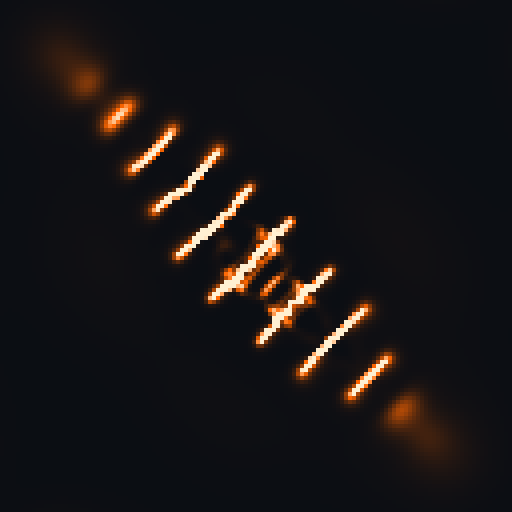
Six generations of 32 candidates reduced the MLX descriptor cost from 6.99 to 5.26, a 25% decrease. The final Swift standardized cost was 0.975.
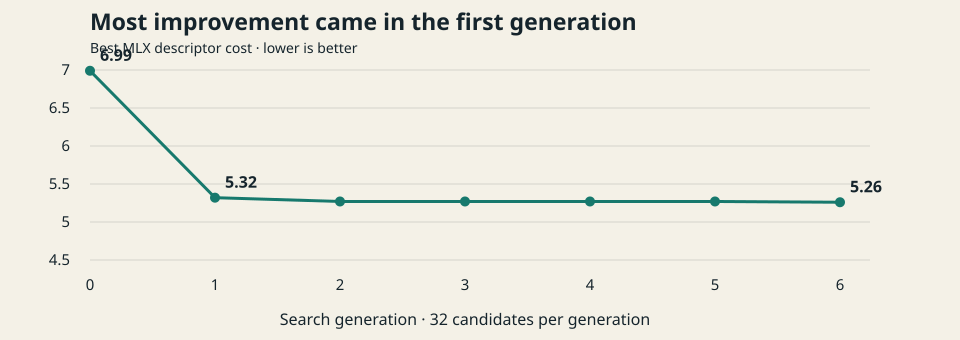
The largest improvement occurred in the first generation. Later generations changed the rule only slightly under the MLX objective.
6 × 32 rollouts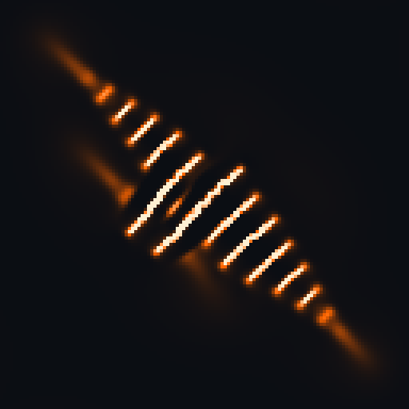
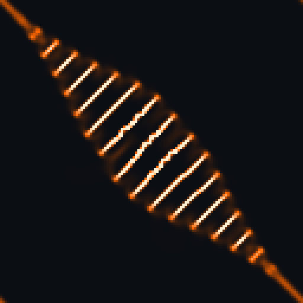
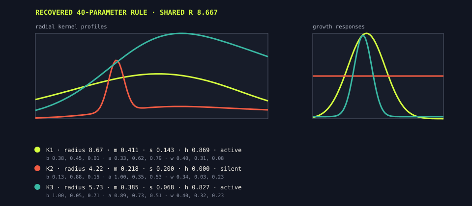
The recovered genotype contains one shared radius and three kernel blocks. Each block specifies a radial profile and a growth response. The second kernel has zero growth height in the selected rule, so two kernels drive the final dynamics.
40 parametersThe target and recovered trajectories have similar mass and occupied area, but their late bodies remain visibly different. The compiler was not asked to preserve segmentation or the exact field, so the score cannot reward those properties.
The source trajectory retains one dominant tapered body with peripheral material.
target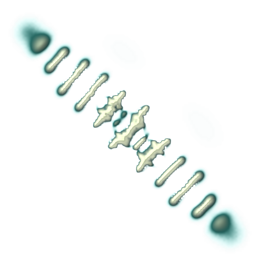
The recovered rule distributes similar mass across a repeated segmented arrangement.
recoveredWe also asked the fixed-frame compiler to reproduce the leaf body and a rescaled frame from Orbium. Both Swift checks returned held=false. The leaf changes phase as it moves, while Orbium comes from a classical Lenia rule family that is absent from the broad three-kernel Flow Lenia corpus used to train this compiler.
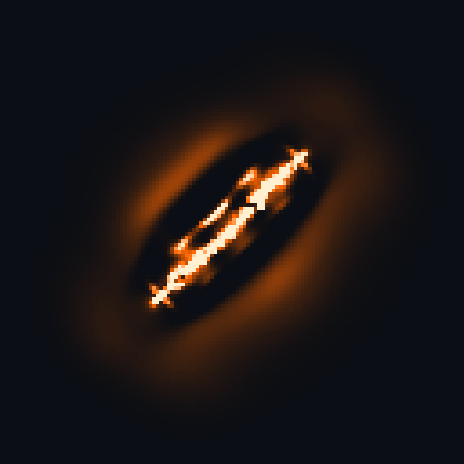
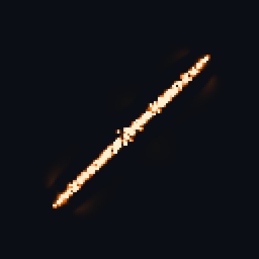
A single image does not specify how a changing body should behave, and the compiler cannot recover a rule family that its training corpus does not contain. The current objective treats phase change as shape error and searches only within the corpus parameterization. The next compiler should compare short trajectories and use priors that cover the requested family.


Replay correction. The organic videos use the current Metal body renderer. The Orbium video was regenerated on September 2 from the native Chakazul preset with qd24_additive_v1 parity semantics. The historical charts and cohort statistics above remain bound to their June artifacts.
We measured six behaviors in 8,174 creatures and used principal component analysis to build a functional morphospace. Its first two axes explained 87.2% of the behavioral variance. A regression from eight shape descriptors explained 72.5% of the activity axis and 3.8% of the locomotion axis.
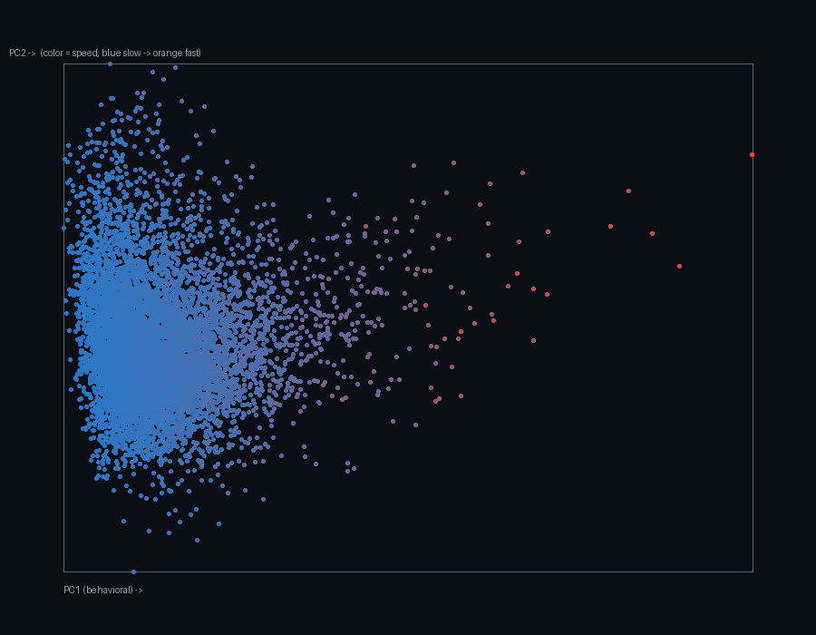
Most creatures occupy a dense low-speed region, while the fastest creatures form a sparse tail. The plot describes the measured distribution.
8,174 creaturesOccupancy and spread helped predict activity. The same shape measurements explained 3.8% of the locomotion axis. A form target therefore leaves most locomotion variation unspecified.
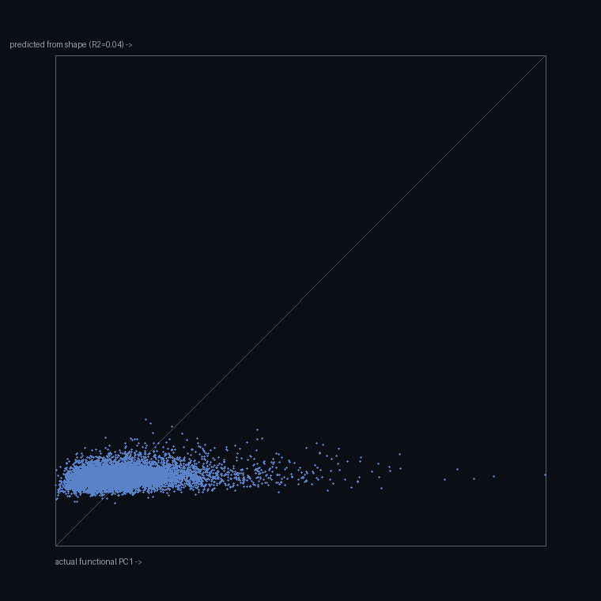
Activity predictions cluster near the diagonal. Locomotion predictions remain compressed near the bottom of the plot.
descriptive regressionWe expected different initial conditions to converge toward the same body. Instead, the trajectories showed weak downhill alignment, and five of eight genotypes spread out over time. A compiler cannot assume that every selected rule will correct perturbations or converge from nearby starts.
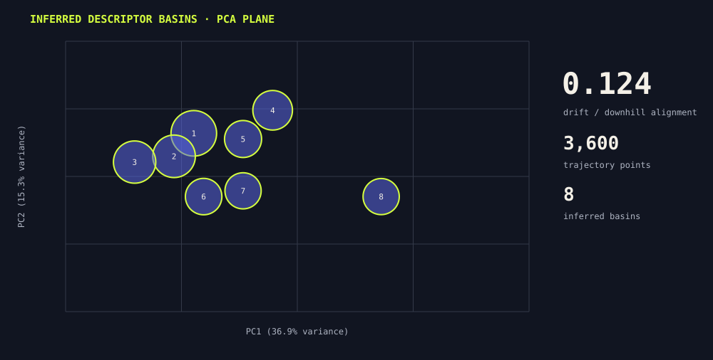
The analysis identified eight basins. Across 3,600 trajectory points, observed drift had an alignment of 0.124 with the fitted downhill direction.
descriptive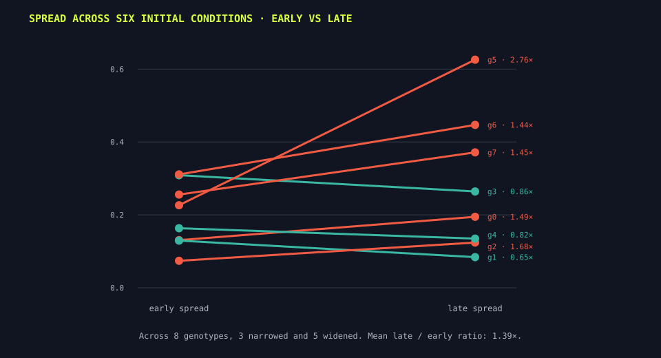
Across eight genotypes, 3 narrowed and 5 widened. Mean late/early spread was 1.39×.
8 × 6 rollouts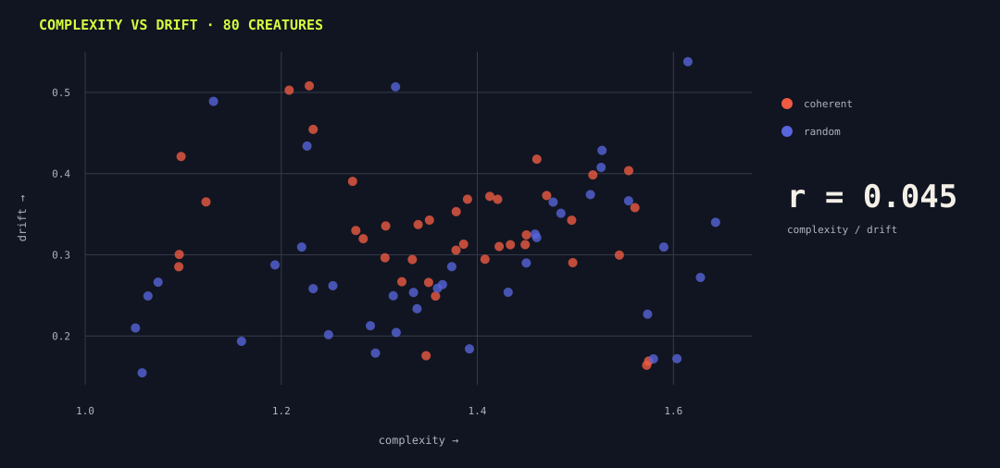
Across 80 creatures, complexity and drift had a correlation of r = 0.045. The coherent and random groups overlapped.
80 creatures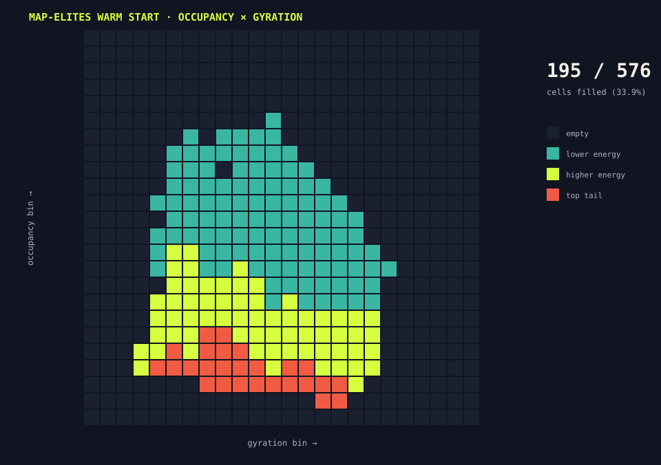
The warm-start archive occupied 195 of 576 cells (33.9%). The empty regions show body measurements for which this corpus offers no direct proposal.
proposal coverageThe evidence covers a 5,000-form fiber analysis, eight conditional samples, four historical refined targets, one historical explicit-form demonstration, and the new organic and Orbium diagnostics above. Cohort-level performance for arbitrary spatial targets has not been measured.
The ledger records the source for every number, specimen, replay, and reused schematic. SHA-256 identifies the exact bytes. The June files do not contain the revision that produced those historical results; the September case-study entries include their exact configs and media.
| Kind | Source | Bytes | SHA-256 prefix |
|---|---|---|---|
| frozen artifact | stage1_fresh_fiber.json | 1,424 | 1fcae1ea8b1613f7… |
| frozen artifact | stage1_jacobian_fiber.json | 4,632 | 9e5e975176e31401… |
| frozen artifact | stage2_cinn.json | 1,244 | d5ecd3b9f31ca5b6… |
| frozen artifact | stage3_refine.json | 551 | be159631b5f0097f… |
| frozen artifact | compiled/demo1/result.json | 1,930 | cf085fb32904ed5f… |
| frozen artifact | compiled/demo1/target.png | 18,649 | de6ebc2862bb8589… |
| frozen artifact | compiled/demo1/creature.png | 16,356 | 53dcf3f8d11f758a… |
| frozen artifact | compiled/demo1_cinn/result.json | 1,889 | a9f5988e1fa3c754… |
| frozen artifact | compiled/demo1_cinn/creature.png | 15,957 | 58e787e1bf2451f2… |
| frozen artifact | compiled/form_demo/result.json | 6,826 | 044567fdf4ea014c… |
| frozen artifact | compiled/form_demo/form_compile.png | 66,658 | b3b03d35b8af0ba2… |
| frozen artifact | mlx_validation.json | 1,039 | 79316f3cb993eef9… |
| frozen artifact | qd_archive/archive.json | 350,936 | 614a1919941427fd… |
| frozen artifact | qd_archive/coverage.png | 2,321 | a6ed57c87e362506… |
| frozen artifact | waddington_flow.json | 2,141 | 6537452489f02b52… |
| frozen artifact | canalization.json | 2,357 | c5a5924d1ae5c946… |
| frozen artifact | functional-morphospace/functional_morphospace.json | 1,685 | e8f6e4b61b319865… |
| frozen artifact | functional-morphospace/shape_function_coupling.json | 1,398 | b9923f08f942351a… |
| frozen artifact | functional-morphospace/functional_morphospace.png | 65,958 | 52f66e8726ea151a… |
| frozen artifact | functional-morphospace/shape_predicts_function.png | 13,462 | 101f3f6ed749b081… |
| frozen artifact | 3c15/functional_map_mlx/functional_map.json | 9,209 | e69a9cec67faaa34… |
| frozen artifact | 3c15/functional_map_mlx/bodies_montage.png | 139,541 | 55b2a1b2466e1bab… |
| reused explanatory schematic | site/assets/blog/lenia-morphospace-report/fig-fiber-bundle.svg | 4,621 | 43000b7e7db2b7c0… |
| reused explanatory schematic | site/assets/blog/lenia-morphospace-report/fig-sections.svg | 4,182 | 569fec81d4c9dd71… |
| reused explanatory schematic | site/assets/blog/lenia-morphospace-report/fig-bridge-genotype-phenotype.svg | 3,035 | 363d5905c657c2e8… |
| 2026-09-01 case-study rerun | compiled/descriptor-organic-2876-final/result.json | 15,065 | b5076bb598eb5baa… |
| 2026-09-01 case-study rerun | compiled/organic-2876-trial/result.json | 7,625 | c1193ac52130e294… |
| 2026-09-01 case-study rerun | compiled/orbium-unicaudatus-trial/result.json | 7,603 | ee6c904c5db6fdf5… |
| 2026-09-01 case-study rerun | media/organic-2876/target-base.json | 1,890 | 96712d27919bb1b9… |
| 2026-09-01 case-study rerun | media/organic-2876/recovered-base.json | 2,145 | 7e61c204d374891b… |
| 2026-09-01 case-study rerun | media/organic-2876/search.json | 1,051 | 8b5d8113be1a7d28… |
| 2026-09-01 case-study rerun | media/organic-2876/target-body.mp4 | 561,891 | e70259f567a5b091… |
| 2026-09-01 case-study rerun | media/organic-2876/recovered-body.mp4 | 957,390 | 9b42766440cf423b… |
| 2026-09-01 case-study rerun | media/organic-2876/target-run/anatomical-target-2876/frames_color/frame_000600.png | 108,733 | 7396b4565167a62f… |
| 2026-09-01 case-study rerun | media/organic-2876/target-run/anatomical-target-2876/frames_color/frame_001190.png | 122,830 | 676f2be888b9ae58… |
| 2026-09-01 case-study rerun | media/organic-2876/recovered-run/anatomical-recovered-2876/frames_color/frame_000600.png | 174,617 | b136b78fcb83bd47… |
| 2026-09-01 case-study rerun | media/organic-2876/recovered-run/anatomical-recovered-2876/frames_color/frame_001190.png | 121,202 | da36d4748bdf8ecb… |
| 2026-09-01 case-study rerun | compiled/descriptor-organic-2876-final/trace-00.png | 17,882 | fa03595c4170e155… |
| 2026-09-01 case-study rerun | compiled/descriptor-organic-2876-final/trace-01.png | 15,293 | 1c4156380fc3ec66… |
| 2026-09-01 case-study rerun | compiled/descriptor-organic-2876-final/trace-02.png | 14,439 | 8a31ce5df13ad3bb… |
| 2026-09-01 case-study rerun | compiled/descriptor-organic-2876-final/trace-06.png | 14,818 | 67ef9c151f42f916… |
| 2026-09-01 case-study rerun | compiled/organic-2876-trial/target.png | 13,121 | 47aac3a2842dedcf… |
| 2026-09-01 case-study rerun | compiled/organic-2876-trial/creature_swift.png | 11,834 | 2eb60b71e7951b21… |
| 2026-09-01 case-study rerun | compiled/orbium-unicaudatus-trial/target.png | 2,381 | 827f02072d4c55f8… |
| 2026-09-01 case-study rerun | compiled/orbium-unicaudatus-trial/creature_swift.png | 6,433 | 73c277936260881d… |
| 2026-09-01 case-study rerun | media/orbium-body/index.json | 1,480 | 2ae4a547d0601b10… |
| 2026-09-01 case-study rerun | media/orbium-body/library-0-canonical-O2(a)-Orbium unicaudatus/library-0-canonical-O2(a)-Orbium unicaudatus.mp4 | 291,129 | deb8d1619d17bc0e… |
| 2026-09-01 case-study rerun | media/orbium-body/library-0-canonical-O2(a)-Orbium unicaudatus/frames_color/frame_000000.png | 106,838 | 52f7016d8c8f3638… |
| 2026-09-01 case-study rerun | media/orbium-body/library-0-canonical-O2(a)-Orbium unicaudatus/frames_color/frame_000119.png | 191,220 | 2e49a8cf6370fd16… |
| 2026-09-02 native Orbium parity replay | media/orbium-native-parity/config.json | 4,305 | 8a7cfcb8a4e9a9f0… |
| 2026-09-02 native Orbium parity replay | media/orbium-native-parity/search.json | 778 | 39b0a0b1b881be28… |
| 2026-09-02 native Orbium parity replay | media/orbium-native-parity/results.jsonl | 4,835 | cc2f4bc9e1dfb369… |
| 2026-09-02 native Orbium parity replay | media/orbium-native-parity/summary.json | 447 | 0484652b5ca2e917… |
| 2026-09-02 native Orbium parity replay | media/orbium-native-parity/orbium-native.mp4 | 520,320 | 0d678f8d150e85b7… |
| 2026-09-02 native Orbium parity replay | media/orbium-native-parity/frame-start.png | 134,502 | f995959d6176be6a… |
| 2026-09-02 native Orbium parity replay | media/orbium-native-parity/frame-late.png | 132,929 | 6da05ba86cf093bb… |
| Flow Lenia import control | canonical-orbium-unicaudatus-3FF60A20/base.json | 9,837 | 9134edc12939f7f9… |
| Flow Lenia import control | canonical-orbium-unicaudatus-3FF60A20/meta.json | 22,292 | af5af4dd00e21ae0… |
| Flow Lenia import control | canonical-orbium-unicaudatus-3FF60A20/search.json | 882 | 9680a2075d796bb0… |
Two evidence windows. The frozen June artifact JSON files do not record their source revision, so artifactProducingRevision remains empty. The September organic and Orbium reruns are listed separately with exact configs, results, frames, and videos. The complete machine-readable ledger is source-manifest.json.